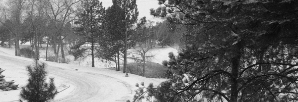

Chapter 2
Dec. 19, 2012
This holiday season our local hero’s saga continues...
Our trusty Mr. Plow’s troubles began before the first flake even dropped from the sky. Preparation for this “Storm of the Week” was made even more difficult as local experts could only confirm that some amount of snow would fall - and it would start falling at some point in the morning. Armed with such detailed information what was our hero to do? He couldn’t very well sit guard all night waiting for that first crystal to drop - or could he ...
As it turns out - no - no he couldn’t. As the day’s eager young workers began rolling in arround 4:30 the Guardian of the Lot was nowhere to be seen. An oversight perhaps overlookable as that sweet cold powder had yet to blanket our little world. But as the morning wore on, the ever diligent Mr. Plow had yet to take his post. In fact even as the first flakes graced our lot and began to privide that ever so slight veneer - still no sign of our saviour.
Alas, all my worry was for naught as a full hour and a half into this frightening blizzard our hero had arrived. He got straight to work clearing our already treacherous surface of the menace that continued to rein down on the Tech Center. Pushing snow from side to side with a passion that consumed a full half his heart, Mr. Plow seemed at least mildly determined to reach “pavement”. Yet as he would be completing his first run he would come to realize his troubles would not be over soon.
You see a new challenger would appear on the adjacent lot. A foe much smaller and more nimble than he. A dastardly fiend with the audacity to believe that it was actually his job to remove the snow from the gray-top. This brazen newcomer would do in mere minutes what our trusty plow could only accomplish in days. A ne'er-do-well so efficient that the only rival capable of such effectiveness could only be the sun.
Facing sure defeat and humiliation the true Mr. Plow would receive a pep talk from his mentor. This talk would prove so inspiring that Mr. Plow would dust off his plow, pick himself up and resume his sworn duty. He would spend the rest of the day completing his moral obligation like only he could.
As the day came to an end our dear Mr. Plow was still hard at work while the young competitor had long since moved on to his next challenge. And while the challenger’s lot was clear of all snow simply wet from the melting of new fallen snow, our own lot was plowed with only the effectiveness that the traffic of a dozen cars or so can provide. Mr. Plow would feel no shame though as he long ago learned to live by his personal creed: “If you can’t do it 10 times better than the competitor - at least do it 10 times longer”.
And thus ends this chapter.
From The Chronicles of Mr. Plow here's wishing you a Merry Christmas